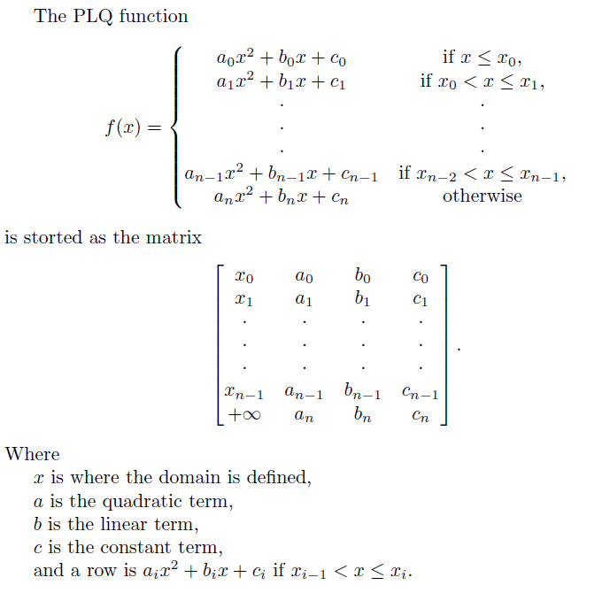

Piecewise linear quadratic (plq) function description
A plq function is a piecewise function, where each piece is either a linear or a quadratic polynomial. It is stored as the matrix, where each row represents one piece of the function.

Note that singleton indicator functions are given in a special form such that [x(1),0,0,c(1)] = I_{x(1)}(x) + c(1).
plqAbs = [0,0,-1,0;inf,0,1,0]; %The function y = |x| plqQuad = [inf,1/5,-4/5,4/5]; % The function y = (x-2)^2 / 5 = (x^2 - 4*x + 4) / 5 plq_plot(plqAbs, plqQuad); % Plot the functions together |
Bryan Gardiner, University of British Columbia, BC, Canada